Personnage · Gang Van der Linde
Simon Pearson
Simon Pearson est un personnage secondaire de Red Dead Redemption 2 (2018), dont l'action se déroule en 1899. Ancien marin, il est le cuisinier et le boucher du gang Van der Linde. Avec Susan Grimshaw, il installe chacun des camps de la bande, et il envoie Arthur Morgan chercher de la viande. Dans "Blessed are the Peacemakers", pendant le chapitre de Clemens Point, il transmet à Dutch une proposition de trêve des O'Driscoll, qui se révèle être un piège. Il a quitté Beaver Hollow au début de "Our Best Selves", quand Dutch le traite de lâche. En 1907, il est marié et tient le magasin général de Rhodes.
Il est interprété par Jim Santangeli, acteur américain.
- Nom
- Simon Pearson
- Naissance
- Non précisée dans le jeu
- Statut
- Vivant en 1907
- Nationalité
- Américaine
- Affiliation
- Marine américaine (autrefois) ; gang Van der Linde (jusqu'en 1899)
- Rôle
- Cuisinier et boucher du camp ; commerçant à Rhodes en 1907
- Famille
- Sa tante Cathy ; son épouse Ethel (en 1907)
- Jeux
- Red Dead Redemption 2
- Voix
- Jim Santangeli (voix et capture de mouvement)
Biographie
Origines
Les jeux ne donnent aucune date de naissance pour Simon Pearson. Il a brièvement servi dans la marine des États-Unis : le texte publié par Rockstar en 2018 parle d'un passage éclair dans la marine, un guide officiel d'un court séjour en mer (ces deux textes, qui évoquent aussi sa famille de baleiniers, sont cités dans la partie Personnalité). Dans ses récits au camp et pendant la sortie aux écrevisses avec Arthur Morgan, il cite Java et Bali parmi les endroits qu'il a vus ; le Red Dead Wiki y ajoute Sumatra. Il raconte à Arthur que son navire est un jour resté bloqué en mer pendant cinquante jours.
Le guide officiel indique qu'il s'est ensuite attiré, dans l'Ouest, de graves ennuis avec des hommes qui lui extorquaient de l'argent. Le Red Dead Wiki y voit des usuriers et précise que Dutch van der Linde et sa bande l'ont tiré de leurs griffes. Il devient alors le cuisinier et le boucher de la bande.
Red Dead Redemption 2 (1899)
Chapitre 1 : Colter
Après l'échec du braquage du ferry à Blackwater, la bande fuit vers le nord, dans les montagnes, et se réfugie à Colter, une ville minière abandonnée, en pleine tempête de neige. Dans "Outlaws from the West", quand le corps de Davey Callander est porté dans la cabane, Susan distribue les premières tâches et charge Pearson de faire l'inventaire de la nourriture. Dutch prend ensuite la parole et demande à Pearson et à Miss Grimshaw de transformer l'endroit en camp, car ils risquent d'y rester quelques jours.
Dans "The Aftermath of Genesis", Pearson explique à Arthur, dans la remise où il cuisine, qu'il n'a que quelques conserves et un lapin pour nourrir dix ou douze personnes. Il entame une histoire de marine qu'Arthur tente d'écourter. Il précise qu'il n'a pas pu faire de provisions avant la fuite de Blackwater, et qu'il a bien envoyé Lenny Summers et Bill Williamson chasser, mais qu'ils n'ont rien trouvé. Arthur répond que la bande survivra et qu'au besoin, on mangera le cuisinier, le plus gras de tous. Charles Smith, entré entre-temps, coupe court à la discussion et emmène Arthur chasser malgré sa main brûlée. Avant leur départ, Pearson lance à Arthur une boîte d'abats salés assortis pour la route.
À l'aller, Charles affirme que Pearson ne sait pas de quoi il parle et qu'il y a du gibier dans les collines. Les deux hommes abattent deux cerfs. Au retour, Arthur fait remarquer à Charles que le cuisinier boit depuis la fuite de Blackwater et qu'il est parti sans rien à manger. À la cuisine, ils trouvent Uncle en train de boire avec Pearson, et Arthur le congédie. Pearson partage son rhum de la marine avec Arthur et Charles, puis demande à Arthur de l'aider à dépecer. Arthur dépèce l'un des cerfs. Pearson lui demande de lui rapporter tout ce qu'il chassera, et Arthur lui demande en retour de préparer un bon ragoût.
Dans "Old Friends", Dutch emmène Arthur et plusieurs autres hommes attaquer la planque des O'Driscoll à Ewing Basin. Avant de partir, il demande à Pearson, à Hosea Matthews et à Charles de surveiller Colter, car des O'Driscoll rôdent dans le secteur. Dans "Eastward Bound", au dégel, Pearson charge les provisions dans les chariots pendant qu'Abigail et Charles installent John Marston, blessé, dans l'un d'eux. Il voyage dans le chariot de tête avec Dutch jusqu'à Horseshoe Overlook, près de Valentine. Une fois le nouveau camp monté, Dutch ordonne à tous de se mettre au travail, et Pearson prend la parole depuis le groupe : la bande a besoin de vraie nourriture, et quelqu'un doit en rapporter chaque jour.
Chapitre 2 : Horseshoe Overlook
À Horseshoe Overlook, Pearson travaille depuis son chariot-cuisine (voir Compétences). Dans "Who is Not Without Sin", Arthur ramène au camp le révérend Swanson, ivre, et Pearson fait partie de ceux qui lâchent un commentaire à leur passage, en notant que quelqu'un s'est bien amusé. À la fin du chapitre, après une fusillade à Valentine, Dutch décide de partir, et dans "A Strange Kindness", Arthur rentre au camp alors que tout le monde plie bagage. La bande s'installe à Clemens Point, au bord du lac Flat Iron, en Lemoyne, près de Rhodes.
Chapitre 3 : Clemens Point
À Clemens Point, Sadie Adler aide Pearson en cuisine. Dans "Further Questions of Female Suffrage", Arthur tombe sur eux en pleine dispute : Sadie refuse de passer ses journées aux fourneaux et rappelle à Pearson qu'elle et son mari se partageaient le travail du ranch. Arthur propose de l'emmener à Rhodes acheter des provisions pour la cuisine. Avant leur départ, Pearson lui confie une lettre à poster, adressée à sa tante Cathy, où il raconte ses aventures et sa réussite. En chemin, Sadie ouvre la lettre et la lit à voix haute en l'imitant. De retour au camp, Arthur et Sadie aident Pearson à décharger le chariot.
Dans "Blessed are the Peacemakers", Micah Bell appelle Pearson et, quand Dutch les rejoint, le pousse à s'expliquer. Pearson raconte qu'il a croisé deux O'Driscoll sur la route de la ville, que la situation a failli dégénérer et qu'ils ont fini par proposer des pourparlers entre Dutch et Colm O'Driscoll pour mettre fin à la querelle. Dutch leur demande s'ils ont perdu la tête, et Hosea parle d'un piège. Micah insiste : le risque vaut d'être pris. Dutch accepte d'y aller avec lui, Arthur les couvrant au fusil. Pearson demande s'il peut venir, et Dutch refuse.
Les pourparlers sont un piège : les O'Driscoll capturent Arthur, qui s'échappe et revient à Clemens Point grièvement blessé. Quand il s'effondre au camp en disant à Dutch que c'était un coup monté, Pearson lui présente ses excuses, et Dutch répond qu'il est un peu tard pour ça. Pearson aide ensuite à porter Arthur jusqu'à sa tente. Après "Blood Feuds, Ancient and Modern" et la visite des agents de la Pinkerton Andrew Milton et Edgar Ross, la bande part pour Shady Belle, une demeure de plantation abandonnée dans le bayou, près de Saint-Denis. Dans "The Battle of Shady Belle", Arthur et John chassent de la maison les Lemoyne Raiders qui l'occupent. À l'arrivée du convoi, Dutch demande à Miss Grimshaw et à M. Pearson d'opérer leur magie sur le nouveau camp.
Chapitre 4 : Saint-Denis
Pearson n'aime pas le marais, et à Shady Belle il s'en plaint à plusieurs membres de la bande (voir Relations). Après "Angelo Bronte, A Man of Honor", il propose à Arthur une activité de compagnon que le Red Dead Wiki intitule "Hunting". Les deux hommes partent en barque de Shady Belle vers le marais situé à l'est et fouillent l'eau à la recherche d'écrevisses. Pearson repère ensuite des alligators près de leurs nids et les attire ailleurs pendant qu'Arthur ramasse leurs œufs.
Dans "Horsemen, Apocalypses", les O'Driscoll renvoient au camp, sur un cheval, le corps mutilé de Kieran Duffy, puis attaquent Shady Belle. Une fois les assaillants repoussés, Dutch charge Charles, le révérend Swanson et Pearson d'enterrer Kieran, pendant qu'Arthur et John évacuent les cadavres des assaillants. Pearson ne participe pas au braquage de la banque de Saint-Denis qui clôt le chapitre : la page de la mission le range parmi les membres de la bande qui n'y apparaissent pas.
Chapitre 5 : Guarma
Pendant que Dutch, Arthur et les rescapés du braquage sont bloqués à Guarma, le reste de la bande s'installe à Lakay, un ensemble de cabanes dans le bayou. D'après la page du personnage sur le Red Dead Wiki, c'est avec Abigail qu'il accueille Arthur à Lakay, dans "Fleeting Joy". Les Pinkerton de Milton attaquent Lakay peu après, et la bande déménage de nouveau, à Beaver Hollow, une grotte de Roanoke Ridge.
Dans "That's Murfree Country", la scène qui clôt le chapitre, Uncle ramène au nouveau camp une Molly O'Shea ivre. Elle prétend avoir renseigné la Pinkerton sur le braquage de Saint-Denis, et Susan l'abat d'un coup de fusil. Susan ordonne ensuite à Bill et à Pearson de brûler le corps.
Chapitre 6 : Beaver Hollow
D'après la page de "Money Lending and Other Sins VI & VII", si Arthur chasse Leopold Strauss de Beaver Hollow en pleine nuit, Pearson et Susan, qui dorment à côté de lui, se réveillent effrayés et s'écartent quand Arthur pousse Strauss vers leurs lits, où celui-ci fait son sac. Pearson fait partie de ceux qui interrogent ensuite Arthur sur la disparition de Strauss. D'après la page du personnage sur le Red Dead Wiki, il boit de plus en plus dans ce chapitre et ne voit plus d'issue pour la bande.
Après "My Last Boy", Pearson ne se trouve plus au camp, pas plus qu'Uncle, Mary-Beth Gaskill et Karen Jones. Le jeu ne montre pas leur départ. Au début de "Our Best Selves", Dutch annonce à Arthur qu'Uncle, Pearson et Mary-Beth ont pris la fuite et les traite de lâches ; Arthur répond qu'ils ne veulent pas mourir.
Épilogue (1907)
Épilogue : Rhodes
En 1907, Pearson est propriétaire du magasin général de Rhodes, dans les Scarlett Meadows, que tenait A.J. Banks en 1899. Il est désormais marié à Ethel (voir Relations). Une photographie de la bande Van der Linde, posant sur une diligence, est accrochée au mur près de son comptoir.
John Marston, qui vit désormais avec sa famille dans un ranch à Beecher's Hope, peut passer au magasin à plusieurs reprises ; le Red Dead Wiki recense quatre conversations. Pearson est heureux de le revoir, et chacun félicite l'autre pour sa nouvelle vie : John pour la boutique, Pearson pour le ranch. John lui apprend qu'il voit toujours Uncle, Charles et Sadie. Pearson avoue avoir un jour trop parlé de la bande à Ethel, après avoir bu. Il évoque aussi les Gray et les Braithwaite, les deux familles rivales auxquelles la bande a eu affaire en 1899 (voir Citations).
Le générique de fin du jeu, qui suit "American Venom", comprend une scène dans le magasin. Pearson termine de servir un client, qui s'en va. Il retourne à sa caisse, prend une inspiration et regarde, avec un léger sourire, la photographie de la bande accrochée au mur.
Personnalité
Rockstar Games présente Pearson le 6 septembre 2018 dans un court texte. La version française publiée par Rockstar dit : "Boucher et cuisinier du camp, Pearson pourrait parler des heures de son passage éclair dans la marine. Éternel optimiste un peu simplet, il ne semble pas s'être rendu compte du tournant qu'a pris sa vie."
Une page de personnage tirée d'un guide officiel, reproduite sur le Red Dead Wiki, en donne une version plus longue. Pearson y est le boucher et le cuisinier du camp, qui a passé peu de temps en mer mais en parle volontiers et longuement. Son père et son grand-père chassaient tous deux le cachalot, et il comptait prendre leur suite ; à sa sortie de l'école, plus personne ne voulait d'huile de baleine. Parti vers l'Ouest, il s'y est attiré de graves ennuis avec des hommes qui le rackettaient. "Dutch found him at his wit's end and took him under his wing" (Dutch l'a trouvé à bout de ressources et l'a pris sous son aile). Le guide conclut : "He is a loud, jolly degenerate who puts on a brave face, but is somewhat in denial about the turn his life has taken." (un bon vivant bruyant et dissipé, qui fait bonne figure mais refuse un peu de voir le tour qu'a pris sa vie).
Au camp, il s'inquiète à voix haute des réserves et demande aux autres de rapporter viande, poisson ou légumes. Il parle souvent de ses années en mer (voir Origines), au point de faire des sardines les monstres marins qu'il a combattus. Uncle, Hosea et Mary-Beth en entendent certaines dans des scènes de camp (voir Relations). Il boit souvent (voir la biographie).
Le déménagement à Shady Belle lui pèse. Il se plaint de la boue et du marais (voir Hosea Matthews et Susan Grimshaw). Un soir de pluie, ivre, il fait le tour du camp en répétant qu'il ne veut pas mourir comme une bête, mais en cuisinier digne de ce nom (la chanson qui suit est citée dans Compétences). Il ne prend pas part aux braquages : le Red Dead Wiki le range, avec le révérend Swanson et Molly O'Shea, parmi les seuls membres qu'on ne voit jamais prendre part à un crime.
Dans ses propres mots
Le Red Dead Wiki ouvre sa page sur ce qu'il confie à Susan Grimshaw sous le kiosque de Shady Belle : "I once saw the cape from a forty foot swell. I once crossed the equator during a meteor shower, I rode into harbors surrounded by beautiful maidens selling pineapple, and colors, colors so brilliant they'd burn your eyes... and now, I live in a swamp, waiting to get shot for riding with outlaws." (j'ai vu le cap du haut d'une houle de douze mètres, j'ai passé l'équateur sous une pluie d'étoiles filantes, je suis entré dans des ports pleins de jolies filles qui vendaient des ananas, avec des couleurs si vives qu'elles vous brûlaient les yeux... et maintenant je vis dans un marais, en attendant de me faire abattre pour avoir suivi des hors-la-loi). Dans un discours au camp que recense la liste de citations du wiki, il réclame des vivres : "I'm talking meat, fish, vegetables, I can cook any of these things, the only thing I cannot cook is air." (de la viande, du poisson, des légumes, je sais tout cuisiner, la seule chose que je ne sais pas cuisiner, c'est l'air). À propos des peaux de bêtes, il fait remarquer : "You know you could trade these or sell these in pretty much any town, if you're looking to make a legitimate bit of money of course." (vous savez, on peut les échanger ou les vendre dans à peu près n'importe quelle ville, si on veut gagner un peu d'argent honnêtement, bien sûr).
Noms
Rockstar et le guide officiel ne l'appellent que Pearson ; le nom complet de Simon Pearson est celui qu'emploient le Red Dead Wiki et Wikipédia. Dans les dialogues, on dit Pearson ou Mr. Pearson : Susan Grimshaw l'appelle "Mr. Pearson" en distribuant les tâches à Colter, dans "Outlaws from the West", et Dutch fait de même dans "Old Friends". Dans "Blessed are the Peacemakers", Micah Bell le traite deux fois de "fat man" (le gros). Dans sa lettre de 1907 à John et Abigail, Tilly Jackson se souvient de lui comme d'"angry Mr. Pearson" (ce grincheux de M. Pearson). Le Red Dead Wiki range aussi parmi ses alias Tacitus Kilgore, le nom sous lequel la bande reçoit son courrier ; les lettres que le wiki reproduit à ce nom sont toutefois adressées à Arthur.
Apparence
Le portrait du guide montre un homme corpulent, aux longs cheveux bruns et à l'épaisse moustache, coiffé d'un haut-de-forme noir à ruban rouge, vêtu d'un pull sombre usé sur une chemise blanche, d'un pantalon foncé et de hautes bottes noires. D'après le Red Dead Wiki, l'ancre tatouée sur le dos de sa main date de ses années dans la marine. En 1907, ajoute le wiki, ses cheveux ont grisonné et le dessus de son crâne est presque chauve, et il porte une chemise rayée sous un grand tablier.
Relations

Susan Grimshaw
Susan et Pearson installent ensemble chaque nouveau camp. D'après le Red Dead Wiki, quand Lenny et Mary-Beth se moquent de sa cuisine, Susan les rappelle aux bonnes manières, Pearson prenant bien soin d'eux.
À Shady Belle, Susan le trouve sous le kiosque, énumérant tout ce qu'il a vu en mer et se plaignant de vivre dans un marais (voir Dans ses propres mots). Elle lui dit qu'elle ne l'aurait jamais cru du genre à s'apitoyer sur son sort ; il met cela sur le compte de la boue, puis assure que tout va bien et retourne au travail.
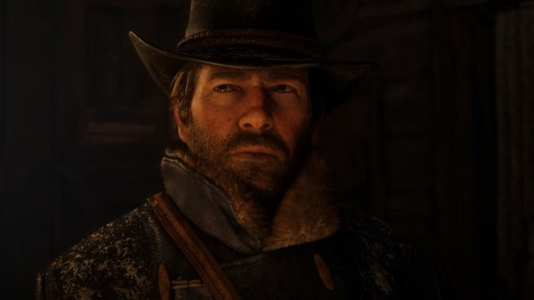
Arthur Morgan
Pearson compte sur Arthur pour la viande dès la première chasse à Colter (voir la biographie). Arthur le taquine et esquive ses histoires de marine. À Horseshoe Overlook, Pearson lui confie son émerveillement devant le monde qui l'entoure et avoue être parfois content d'avoir quitté la marine ; quand Arthur plaisante sur le changement que représente l'entrée dans un gang, Pearson redevient sérieux, dit avoir vu des choses terribles et s'éloigne.
Pearson présente ses excuses à Arthur après la trêve manquée et l'emmène pêcher l'écrevisse à Shady Belle (voir la biographie) ; il lui passe aussi des commandes (voir Missions).

Uncle
Uncle passe une bonne partie de son temps dans la cuisine de Pearson et autour de son feu. À Horseshoe Overlook, Pearson, presque en criant, soutient que leur sort pourrait être pire et évoque un équipage bloqué en mer, à l'agonie ; Uncle répond qu'il échangerait volontiers et raconte s'être retrouvé orphelin à neuf ans, dans une ville inconnue. Pearson se calme et admet que chaque vie est dure à sa façon. Un autre soir, une histoire de marin de Pearson inspire à Uncle celle de la fois où il s'est perdu au Congo. À Clemens Point, Uncle lui demande si la mer lui manque ; Pearson répond que oui, mais qu'il est trop vieux pour y retourner, et Uncle raconte qu'il a failli partir pour le Brésil avec la femme d'un capitaine, mais qu'il a raté le bateau parce qu'il était ivre. D'après le Red Dead Wiki, quand Uncle critique sa cuisine, Pearson le traite de petit asticot répugnant.

Sean MacGuire
Sean est le partenaire de chant habituel de Pearson, qui l'accompagne à l'accordéon (voir Compétences). Quand Sean passe devant la marmite à Horseshoe Overlook, Pearson lui ordonne de venir manger. À Clemens Point, le lapin blanc que Sean et Jack trouvent près du camp finit dans la marmite de Pearson.

Sadie Adler
Après son sauvetage, Sadie aide Pearson en cuisine à Horseshoe Overlook, sans entrain. À Clemens Point, elle refuse de passer ses journées à couper des légumes, et leur dispute pousse Arthur à l'emmener à Rhodes avec la lettre de Pearson pour sa tante (voir la biographie). D'après le Red Dead Wiki, lors d'une de leurs querelles, Pearson brandit son couperet et lui ordonne de surveiller son langage.

Hosea Matthews
D'après le Red Dead Wiki, Pearson et Hosea s'entendent bien et plaisantent souvent ensemble. Pearson fait partie de ceux à qui Hosea offre à boire à Clemens Point après un gros gain aux cartes. À Shady Belle, Hosea lui demande s'il est prêt pour Tahiti ; Pearson répond qu'il n'y est jamais allé, mais qu'il a vu Bali et Java, dont un homme pas plus grand qu'une noix de coco qui parlait sept langues. Hosea lui raconte qu'Abigail a si bien joué son rôle en ville qu'il n'a jamais vu meilleure actrice. Quand Pearson demande si le coup de la banque va marcher, Hosea lui dit de se préparer au départ, et Pearson se dit soulagé, le marais n'étant pas fait pour lui.

Charles Smith
À Colter, l'inquiétude de Pearson pour les vivres envoie Charles et Arthur à leur première chasse (voir la biographie). Dans "Old Friends", Dutch confie la garde du camp à Pearson, Charles et Hosea.

Bill Williamson
À Horseshoe Overlook, Bill apporte du poisson en cuisine et réclame bruyamment des remerciements ; Pearson lui répond qu'il l'a déjà remercié et lui demande s'il est dur d'oreille. Un soir où ils boivent ensemble à Shady Belle, Bill lui lance que tout son problème, c'est qu'il est ivrogne ; Pearson le bouscule et le traite de grande gueule, et Bill l'envoie au sol d'un coup de poing. La scène peut se rejouer à la fête du retour de Jack.

Micah Bell
Micah traite Pearson de "fat man" (voir Noms) et le pousse à parler à Dutch de l'offre de trêve des O'Driscoll dans "Blessed are the Peacemakers" (voir la biographie). À Clemens Point, après un coup, Micah lui jette de l'argent à la figure et lui ordonne d'aller acheter à manger ; Pearson s'éloigne timidement sous les rires de Micah. Dans une autre version de la scène, Micah lui tend l'argent et met le reste dans la caisse du camp.

Dutch van der Linde
Dutch a recueilli Pearson dans la bande à l'époque où des hommes le rackettaient (voir Personnalité). Dans "Blessed are the Peacemakers", Pearson lui transmet l'offre de trêve des O'Driscoll et reçoit l'ordre de rester au camp ; Dutch le traitera plus tard de lâche pour avoir filé (voir la biographie).

Karen Jones
Karen chante avec Pearson à la table de poker (voir Compétences). À Horseshoe Overlook, elle raconte à Susan qu'à Colter elle avait songé à la manger, et que Pearson et elle n'étaient pas d'accord sur la meilleure recette.

Javier Escuella
Près de la marmite de Horseshoe Overlook, Pearson et Javier comparent la boue et la neige. Pearson lui refile un tuyau : une femme et quelques hors-la-loi de Watson's Cabin y cacheraient de l'argent ; Javier promet de le tenir au courant s'il trouve quelque chose, et Pearson fait la même proposition à Arthur s'il passe par là. Javier accompagne à la guitare plusieurs des chansons de Pearson (voir Compétences).

Abigail Marston
Pendant la disparition de Jack, à Shady Belle, Abigail trouve Pearson en train de fumer sur le ponton et lui demande où est son fils ; Pearson répond que Jack est un garçon malin, qui finit toujours par revenir. Si Arthur évoque la disparition de l'enfant, Pearson lui demande qui pourrait lui reprocher d'avoir filé, et Arthur en convient. À Lakay, Pearson et Abigail accueillent Arthur à son retour de Guarma (voir la biographie).

Mary-Beth Gaskill
D'après le Red Dead Wiki, Mary-Beth et Lenny se moquent de la cuisine de Pearson jusqu'à ce que Susan intervienne (voir Susan Grimshaw). À Shady Belle, elle demande à Pearson où est passé Kieran (voir Kieran Duffy).

Lenny Summers
Quand Pearson raconte à Arthur, à Colter, que Lenny n'a rien trouvé à chasser (voir la biographie), Arthur répond que Lenny préfère les livres à la chasse. Lenny se moque aussi de la cuisine de Pearson (voir Susan Grimshaw).

Kieran Duffy
Quand Kieran disparaît après la fête du retour de Jack, Mary-Beth demande à Pearson où il se trouve. Pearson n'en sait rien et tente de détourner la conversation avec l'histoire d'un requin qu'il a vu dévorer plusieurs hommes. Après l'attaque des O'Driscoll contre Shady Belle, Pearson fait partie des trois hommes qui enterrent Kieran (voir la biographie).

Leopold Strauss
À Beaver Hollow, Pearson et Susan dorment à côté de Strauss, et se réveillent si Arthur le chasse en pleine nuit (voir la biographie). D'après le Red Dead Wiki, Pearson et Abigail reprochent ensuite à Arthur de ne pas avoir consulté les autres.

Molly O'Shea
Après que Susan a abattu Molly, à la fin de "That's Murfree Country", Pearson et Bill reçoivent l'ordre de brûler son corps (voir la biographie).

Orville Swanson
Dans "Who is Not Without Sin", Pearson lâche un commentaire au passage de Swanson, ivre, qu'Arthur porte à travers le camp (voir la biographie). Le Red Dead Wiki range les deux hommes parmi les membres de la bande qu'on ne voit jamais prendre part à un crime (voir Personnalité).

Tilly Jackson
Dans sa lettre de 1907 à John et Abigail, Tilly cite Pearson parmi les membres de la bande qui lui manquent (voir Noms).

John Marston
En 1907, John peut rendre visite à Pearson à plusieurs reprises au magasin général de Rhodes et lui donner des nouvelles de sa nouvelle vie (voir la biographie).
Ethel Pearson
Ethel est l'épouse de Pearson en 1907. On ne la voit jamais, mais on l'entend quand John parle à Pearson dans le magasin général de Rhodes ; d'après le Red Dead Wiki, elle occupe l'étage. Le wiki en fait sa seconde épouse et indique que Pearson lui reconnaît mauvais caractère, mais assure l'aimer. L'encadré du wiki mentionne une ex-épouse prénommée Michele, sans rattacher ce nom à la moindre scène du jeu.
Aunt Cathy
Cathy est la tante de Pearson. Dans "Further Questions of Female Suffrage", il confie à Arthur une lettre à lui poster, que Sadie lit à voix haute sur la route de Rhodes (voir la biographie).
Compétences, armes et chevaux
Cuisinier et boucher
Pearson tient la cuisine du camp : il prépare chaque jour le ragoût à son chariot-cantine et découpe le gibier qu'on lui rapporte. Arthur peut lui remettre des carcasses et d'autres vivres, qui alimentent les réserves du camp. Quand les stocks baissent, il réclame de la viande. À partir de "Our Best Selves", Pearson n'étant plus là, le ragoût du camp n'est plus disponible ; la page du Red Dead Wiki consacrée à la mission conseille de se rabattre sur la viande de gros gibier aux herbes. Le Red Dead Wiki lui attribue pour arme un couteau de chasse.
Sacoches
Du chapitre 2 au chapitre 4, puis au chapitre 6, Pearson fabrique des sacoches pour Arthur et des aménagements pour le camp à partir de peaux et d'autres parties d'animaux. Toutes les sacoches et quatre des aménagements exigent les outils de maroquinerie (Leather Working Tools), achetés dans le registre du camp pour 225 dollars (180 dollars avec la remise accordée à un honneur élevé, selon le Red Dead Wiki). Le registre lui-même s'ouvre quand Arthur a récupéré une dette de "Money Lending and Other Sins I & II" et l'a déposée dans la caisse du camp. Chaque sacoche demande une peau de cerf parfaite et deux autres peaux parfaites ; la sacoche Legend of the East se débloque une fois toutes les autres fabriquées. Dans l'épilogue, Pearson n'est plus là, et John peut acheter les sacoches chez n'importe quel receleur sans fournir de peaux.
| Sacoche | Contenance accrue | Peaux parfaites | Condition |
|---|---|---|---|
| Tonics Satchel | Toniques | Cerf, cerf mâle, wapiti | Deux améliorations du chariot médical dans le registre |
| Ingredients Satchel | Ingrédients de cuisine et de fabrication | Cerf, blaireau, écureuil | Cinq carcasses d'animaux données à Pearson |
| Kit Satchel | Équipement | Cerf, wapiti, panthère | Aucune |
| Provisions Satchel | Provisions et plats cuisinés | Cerf, bison, raton laveur | Deux améliorations du chariot de provisions dans le registre |
| Materials Satchel | Matériaux de fabrication | Cerf, sanglier, peau d'iguane | Trois recettes fabriquées au feu de camp |
| Valuables Satchel | Objets de valeur à revendre | Cerf, castor, lapin | 50 dollars en liquide versés à la caisse du camp |
| Legend of the East Satchel | Tous les types d'objets | Cerf, couguar, loup | Toutes les autres sacoches fabriquées |
Aménagements du camp
Le Red Dead Wiki recense 17 aménagements que Pearson peut réaliser. Les quatre qui exigent les outils de maroquinerie sont la housse en peau de couguar du coffre d'Arthur, le dessus de table en peau de sanglier de sa tente, les plateaux en cuir de pronghorn et la peau de serpent tendue sur le banjo.
| Emplacement | Aménagements (matériaux) |
|---|---|
| Tente d'Arthur | Crâne d'alligator (peau d'alligator) ; crâne de mouflon (carcasse de mouflon) ; housse de coffre (2 peaux de couguar) ; dessus de table (peau de sanglier) ; tapis (2 peaux de bœuf) |
| Tente de John | Tapis (4 peaux de sanglier) |
| Tables du camp | Deux plateaux (2 peaux de pronghorn) |
| Chariot de Pearson | Crâne de pronghorn (carcasse de pronghorn) |
| Feu de camp principal | Bois d'élan ; crâne de loup (carcasse de loup) ; peau de banjo (2 peaux de serpent) ; housse de caisse (peaux de castor, de rat musqué et de renard) ; housse du banc en rondin (2 peaux de loup) ; tapis d'appentis (peau de vache) |
| Feu de camp secondaire | Tapis de sol (2 peaux de chèvre) ; bois de wapiti ; os suspendus (bois de cerf) |
Accordéon et chansons
Pearson joue de l'accordéon. La page du Red Dead Wiki consacrée aux événements de camp recense les chansons qu'il joue ou chante : "Home, Dearie, Home", "A Yankee Ship", "Blow the Man Down" et "John Brown (Glory, Glory Hallelujah)" avec Sean MacGuire ; "Ring Dang Doo" avec Sean et Uncle ; "Poor Lonesome Cowboy" avec Karen Jones puis, avec Uncle en plus, "Otis Miller", toutes deux sur la guitare de Javier. À la fête du retour de Jack, il rejoint Uncle au milieu de "The Cowboy", et un soir de pluie, à Shady Belle, il chante seul "The Old Scout's Lament".
Missions
Le Red Dead Wiki anglais recense pour Pearson treize missions principales de Red Dead Redemption 2, plus le générique de fin et une activité de compagnon. Le Red Dead Wiki français donne les mêmes treize missions. Le tableau ci-dessous intègre aussi les missions où il ne prononce qu'une réplique, n'est qu'évoqué, ou dont la page signale son absence.
Red Dead Redemption 2, missions principales
| Mission | Chapitre | Rôle de Pearson |
|---|---|---|
| Outlaws from the West | 1. Colter | Envoyé par Susan faire l'inventaire des vivres à Colter ; Dutch lui demande ensuite, avec Susan, de transformer l'endroit en camp. |
| The Aftermath of Genesis | 1. Colter | Point de départ de la mission. Annonce à Arthur que le camp n'a plus de vivres, lui donne une boîte d'abats salés, puis partage son rhum et lui fait dépecer un cerf. |
| Old Friends | 1. Colter | Laissé à Colter avec Hosea et Charles pour garder le camp pendant que les autres attaquent les O'Driscoll. |
| Eastward Bound | 1. Colter | Charge les provisions, voyage dans le chariot de tête avec Dutch jusqu'à Horseshoe Overlook et réclame de la nourriture fraîche chaque jour. |
| Who is Not Without Sin | 2. Horseshoe Overlook | Au camp. Lâche un commentaire quand Arthur ramène sous sa tente le révérend Swanson, ivre. Absente de la liste du wiki. |
| A Strange Kindness | 2. Horseshoe Overlook | Citée par les deux wikis ; la page de la mission ne décrit pas son rôle. La bande lève le camp de Horseshoe Overlook. |
| Further Questions of Female Suffrage | 3. Clemens Point | Se dispute avec Sadie en cuisine, confie à Arthur une lettre pour sa tante Cathy, puis décharge les provisions avec eux. |
| Blessed are the Peacemakers | 3. Clemens Point | Rapporte l'offre de pourparlers des O'Driscoll ; Dutch refuse de l'emmener. Présente ses excuses à Arthur, blessé, et aide à le porter jusqu'à sa tente. |
| The Battle of Shady Belle | 3. Clemens Point | Arrive avec le convoi ; Dutch lui demande, avec Susan, d'installer le camp de Shady Belle. |
| Horsemen, Apocalypses | 4. Saint-Denis | Après l'attaque des O'Driscoll, enterre Kieran avec Charles et Swanson sur ordre de Dutch. |
| Banking, The Old American Art | 4. Saint-Denis | Absent. La page de la mission le range parmi les membres de la bande qui ne participent pas au braquage de la banque. |
| Fleeting Joy | 5. Guarma | À Lakay. Accueille Arthur à son retour, d'après la page du personnage, avant l'attaque de la Pinkerton. |
| That's Murfree Country | 5. Guarma | Après que Susan a abattu Molly à Beaver Hollow, reçoit l'ordre de brûler le corps avec Bill. |
| Visiting Hours | 6. Beaver Hollow | Citée par les deux wikis ; la page de la mission ne décrit pas son rôle. |
| Money Lending and Other Sins VI & VII | 6. Beaver Hollow | Réveillé si Arthur chasse Strauss de nuit ; demande ensuite où Strauss est passé. Absente de la liste du wiki. |
| My Last Boy | 6. Beaver Hollow | Dernière mission où Pearson se trouve au camp ; il est parti une fois qu'elle est terminée. |
| Our Best Selves | 6. Beaver Hollow | Mentionné. Dutch annonce à Arthur que Pearson, Uncle et Mary-Beth ont pris la fuite et les traite de lâches. Absente de la liste du wiki. |
| Ending Credits | Épilogue II | Montré à la tête du magasin général de Rhodes, les yeux sur une photographie de la bande. |
Red Dead Redemption 2 : activité de compagnon, commandes et jeux au camp
| Activité | Chapitre | Rôle de Pearson |
|---|---|---|
| Hunting (Simon Pearson) | 4. Saint-Denis | Donneur de l'activité : écrevisses, puis œufs d'alligator, dans le marais à l'est de Shady Belle (voir la biographie). Disponible après "Angelo Bronte, A Man of Honor". Récompenses : trois écrevisses et jusqu'à dix œufs d'alligator. |
| Commande : un lapin | 2. Horseshoe Overlook | Il demande un lapin à Arthur. D'après la page du Red Dead Wiki consacrée au trophée Errand Boy, la commande est rare et apparaît surtout au chapitre 2 ; elle rapporte une veste d'éclaireur unique en denim bleu et compte pour le trophée. |
| Commande : un compas de marine | 2, 3 et 4 | D'après la page Errand Boy, il ne le réclame que pendant une partie de poker avec lui. On trouve un compas de marine dans le hangar à bateaux du manoir Braithwaite, ou dans le coffre de la diligence d'Ashton pendant "Fatherhood and Other Dreams". La commande compte aussi pour le trophée. |
| Dominos | 4. Saint-Denis | L'un des membres de la bande avec qui Arthur peut jouer aux dominos à Shady Belle, avec Hosea, Abigail et Mary-Beth. |
Citations
Les répliques ci-dessous sont reproduites telles qu'elles sont prononcées dans le jeu, en anglais, avec la mission et la personne à qui elles s'adressent.
Colter et la route vers l'est
We have a few cans of food and a rabbit... for what, ten, twelve people?
The Aftermath of Genesis (RDR2, chapitre 1), à Arthur, dans la remise où il cuisine. Traduction : « On a quelques conserves et un lapin... pour quoi, dix, douze personnes ? »We were stranded at sea... for fifty days.
The Aftermath of Genesis (RDR2, chapitre 1), à Arthur, qui vient de dire qu'il ne veut rien entendre sur la marine. Arthur répond : "And you unfortunately survived..." Traduction : « On est restés bloqués en mer... pendant cinquante jours. » (« Et tu as malheureusement survécu... »)You're gonna need something to eat out there.
The Aftermath of Genesis (RDR2, chapitre 1), en lançant à Arthur une boîte d'abats salés assortis. Arthur lit l'étiquette et lâche : "Starving would be preferable." Traduction : « Il va vous falloir quelque chose à manger, là-bas. » (« Je préférerais mourir de faim. »)Navy rum, sir... it's the only thing... the only thing. Keeps you sane, it does.
The Aftermath of Genesis (RDR2, chapitre 1), après qu'Arthur, la bouteille à la main, a demandé ce que c'était. Traduction : « Du rhum de la marine, monsieur... il n'y a que ça... que ça. Ça garde la tête sur les épaules, ça. »Not too bad, Mr. Morgan. Yeah, they always said you were a butcher.
The Aftermath of Genesis (RDR2, chapitre 1), en regardant Arthur dépecer le cerf. Traduction : « Pas mal du tout, monsieur Morgan. Eh oui, on a toujours dit que vous étiez un boucher. »Heck, Arthur Morgan's first decent bit of hunting, after all these years.
The Aftermath of Genesis (RDR2, chapitre 1), pendant qu'Arthur accroche la peau du cerf à un séchoir. Traduction : « Ça alors, la première chasse digne de ce nom d'Arthur Morgan, après toutes ces années. »And... we need food... real food... that means every day, one of you.
Eastward Bound (RDR2, chapitre 1), depuis le groupe, après que Dutch a demandé à chacun de gagner sa croûte à Horseshoe Overlook. Traduction : « Et... il nous faut à manger... de la vraie nourriture... ça veut dire tous les jours, l'un d'entre vous. »Somebody had a good time.
Who is Not Without Sin (RDR2, chapitre 2), quand Arthur traverse le camp en portant le révérend Swanson, ivre. Traduction : « Y en a un qui s'est bien amusé. »
Les pourparlers
It's peace, Dutch... the O'Driscolls... I mean, I think there's a way.
Blessed are the Peacemakers (RDR2, chapitre 3), à Dutch, après que Micah lui a dit de parler. Traduction : « C'est la paix, Dutch... les O'Driscoll... enfin, je crois qu'il y a moyen. »I met a couple of the O'Driscoll boys on the road into town... things were about to get ugly... but you know how I am in a fight, huh? Like a cornered tiger. Anyway... somehow it didn't, but... we got to talking... and they suggested a parley... to end things... like gentlemen.
Blessed are the Peacemakers (RDR2, chapitre 3), à Dutch, Arthur et Micah. Dutch répond : "Gentlemen? Colm O'Driscoll? Have you lost your minds?" Traduction : « J'ai croisé deux gars des O'Driscoll sur la route de la ville... ça allait mal tourner... mais vous savez comment je suis dans une bagarre, hein ? Comme un tigre acculé. Bref... allez savoir pourquoi, ça n'a pas dégénéré, mais... on s'est mis à discuter... et ils ont proposé des pourparlers... pour en finir... entre gentlemen. » (« Des gentlemen ? Colm O'Driscoll ? Vous avez perdu la tête ? »)What about me?
Blessed are the Peacemakers (RDR2, chapitre 3), quand Dutch décide de n'emmener que Micah et Arthur. Dutch lui répond : "This ain't the time for tigers, my friend." Traduction : « Et moi ? » (« Ce n'est pas le moment des tigres, mon ami. »)I'm sorry, Arthur.
Blessed are the Peacemakers (RDR2, chapitre 3), quand Arthur, blessé, s'effondre de retour à Clemens Point. Dutch l'interrompt : "It's a bit late for apologies..." Traduction : « Je suis désolé, Arthur. » (« C'est un peu tard pour les excuses... »)
Ce qu'on lui dit, ce qu'on dit de lui
Mr. Pearson... Miss Grimshaw... I need you to turn this place into a camp. We may be here for a few days.
Dutch van der Linde, Outlaws from the West (RDR2, chapitre 1), dans la cabane de Colter. Traduction : « Monsieur Pearson... Miss Grimshaw... j'ai besoin que vous transformiez cet endroit en camp. Nous risquons de rester ici quelques jours. »You noticed how Pearson's had a bottle in his hand ever since we fled Blackwater? We give the camp cook five minutes to grab the essentials and go, and he doesn't even bring a crumb of food.
Arthur Morgan à Charles Smith, The Aftermath of Genesis (RDR2, chapitre 1), sur le chemin du retour de la chasse. Traduction : « T'as remarqué que Pearson a une bouteille à la main depuis qu'on a fui Blackwater ? On laisse cinq minutes au cuisinier du camp pour prendre l'essentiel et filer, et il n'emporte même pas une miette de nourriture. »I love it! Miss Grimshaw, Mr. Pearson, would you two kindly work your magic?
Dutch van der Linde, The Battle of Shady Belle (RDR2, chapitre 3), en arrivant à Shady Belle. Traduction : « J'adore ! Miss Grimshaw, monsieur Pearson, auriez-vous l'amabilité d'opérer votre magie ? »
D'après la liste de citations du Red Dead Wiki
You see that swamp, Arthur? That's God's own pantry.
À Arthur, à propos du marais qui entoure Shady Belle (RDR2, chapitre 4 ; liste de citations de la page du personnage). Traduction : « Vous voyez ce marais, Arthur ? C'est le garde-manger du Bon Dieu. »You know, sometimes people here still talk about the brutal demise of the Grays and the Braithwaites. I just smile and keep quiet.
À John Marston, dans son magasin de Rhodes (RDR2, épilogue de 1907 ; liste de citations de la page du personnage). Traduction : « Vous savez, les gens d'ici parlent encore parfois de la fin brutale des Gray et des Braithwaite. Moi, je souris et je me tais. »
Conception et interprétation
Le casting
Pearson est interprété par Jim Santangeli, acteur, scénariste et réalisateur américain. D'après le Red Dead Wiki, il est né en 1976 à Easton, dans le Connecticut, s'est fait connaître avec la série Our Cartoon President et le film Paterno, et assure à la fois la voix et la capture de mouvement du personnage. Le wiki et GTA BOOM précisent qu'il avait auparavant prêté sa voix à un passant dans Grand Theft Auto IV, autre jeu de Rockstar.
Après le jeu
Le 8 juin 2019, Santangeli participe à la table ronde consacrée à la distribution de Red Dead Redemption 2 lors de la SacAnime Summer 2019, à Sacramento, aux côtés de Roger Clark, Rob Wiethoff, Steve J. Palmer, Peter Blomquist, Alex McKenna, Curzon Dobell et Gabriel Sloyer.
Lors d'un direct sur TikTok rapporté par GTA BOOM le 11 juin 2026, il indique tenir un rôle dans Grand Theft Auto VI, qu'il décrit comme "a little small bit" (un tout petit rôle) et "some cool stuff, but small" (des choses sympas, mais modestes). Dans cet article, Ray Ampoloquio le présente comme le premier acteur du jeu confirmé publiquement à cette date.
Contenu coupé et illustrations
Le Red Dead Wiki recense dans les fichiers du jeu un pantalon et un pull inutilisés pour Pearson, identiques à ceux qu'il porte dans la version finale. Deux scènes de camp prévues à Horseshoe Overlook ont été coupées : dans l'une, Pearson se plaint auprès de Charles de la paresse de certains quand il s'agit de rapporter à manger, puis demande à Arthur s'il compte aider, et Arthur répond que ce n'est pas exclu ; dans l'autre, Pearson prévient Arthur qu'il devra peut-être servir du biscuit de mer, dont Arthur n'a jamais entendu parler, et lui explique que c'est une affaire de marins qu'il ne peut pas comprendre. La même page range une partie de poker avec Pearson parmi les contenus supprimés ou réduits.
Une illustration conceptuelle publiée par le wiki montre Pearson avec Bill, Karen, Tilly, Uncle, Mary-Beth et Strauss. Le wiki publie aussi une comparaison de sa coiffure avant et après le correctif de lancement du jeu. Sur la photo de la bande accrochée dans son magasin en 1907, le cocher est assis à droite, une disposition que la page du wiki consacrée au contenu coupé fait remonter aux débuts du développement, avant que le siège du conducteur ne passe à gauche.
Accueil
Classements
Dans le classement des 24 membres du gang Van der Linde établi par la rédaction de Game Informer et publié le 27 décembre 2018, Pearson arrive 21e. Sa notice estime que, contrairement aux trois membres classés derrière lui, "Pearson isn't awful. He's just kind of a dork" (Pearson n'est pas affreux, juste un peu ringard), et cite sa lettre à sa tante, que Sadie lit à voix haute et où il ment sur ses réussites. Elle ajoute qu'il remplit un rôle important, nourrir tout le monde, sans que la bande lui en sache gré, mais que "Pearson's biggest crime is how uninteresting he is" (son plus grand crime, c'est d'être si peu intéressant).
TheGamer le classe cinquième sur dix membres du gang, dans un article de Jerrad Wyche publié le 10 août 2019. Selon l'auteur, Pearson passe d'abord pour "a whiny and needy man who just so happens to be the gang's cook" (un geignard en mal d'attention qui se trouve être le cuisinier de la bande), mais n'est en fait "simply a man not cut out for this lifestyle" (qu'un homme pas fait pour cette vie), qui ne s'agace que lorsque sa subsistance est directement en jeu.
Autres médias et postérité
Promotion
Pearson fait partie des membres de la bande présentés par Rockstar dans la série de portraits et de descriptions de personnages publiée sur Twitter le 6 septembre 2018 (voir Personnalité) et reprise le 7 septembre 2018 par The Hollywood Reporter. La galerie du Red Dead Wiki comprend aussi une illustration promotionnelle de lui. Il figure au premier rang du montage des illustrations officielles de 23 membres de la bande qui ouvre la liste des personnages du jeu sur Wikipédia, où la section qui lui est consacrée s'intitule "Mr. Pearson".
Anecdotes
- Dutch traite Angelo Bronte de "repulsive little maggot" (sale petit asticot répugnant) en le noyant, dans "Revenge is a Dish Best Eaten". La page de la mission relève que Pearson adresse les mêmes mots à Uncle (voir Relations).
- Pendant la sortie aux écrevisses, Arthur peut abattre les alligators au lieu d'attendre que Pearson les éloigne. Pearson, fâché, l'attend alors à la barque, mais l'activité se poursuit normalement.
- Jusqu'à onze œufs d'alligator peuvent être ramassés pendant l'activité ; l'un d'eux est automatiquement remis à Pearson à la fin, ce qui en laisse dix au plus à Arthur. Si Arthur a déjà accompli pour Algernon Wasp la course "Duchesses and Other Animals", qui porte elle aussi sur des œufs d'alligator, il évoque cette course, d'après la page de l'activité.
- Le Red Dead Wiki range la sortie aux écrevisses, une activité du chapitre 4, parmi les contenus manquables.
- Cain, le chien des Marston, vient parfois renifler et lécher la nourriture posée sur la table de Pearson.
- Le magasin général de Rhodes est le seul du jeu à changer de propriétaire entre 1899 et 1907. D'après la page du wiki consacrée au magasin, A.J. Banks est parti monter d'autres affaires dans l'Est.
Galerie
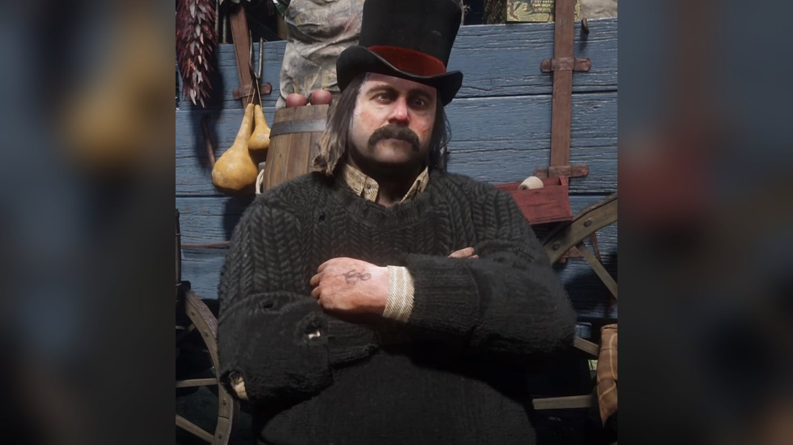
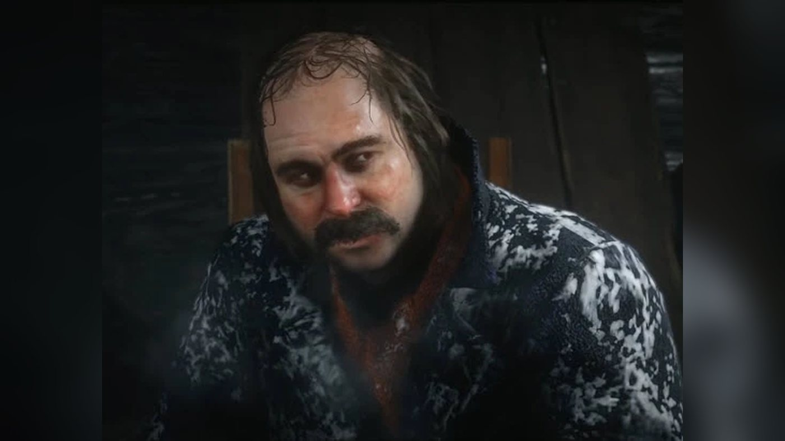
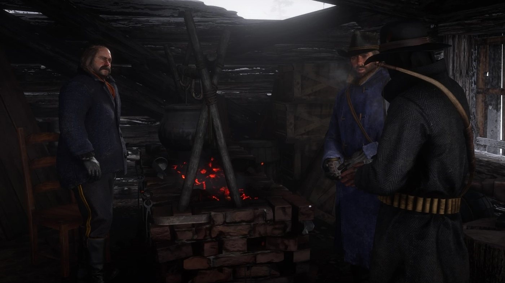
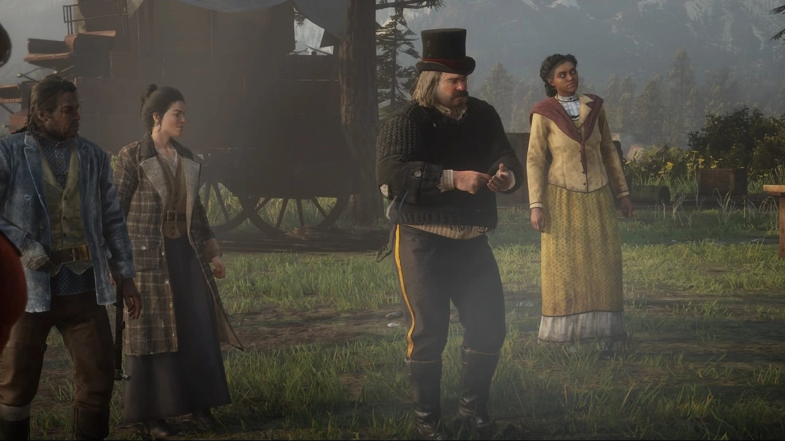
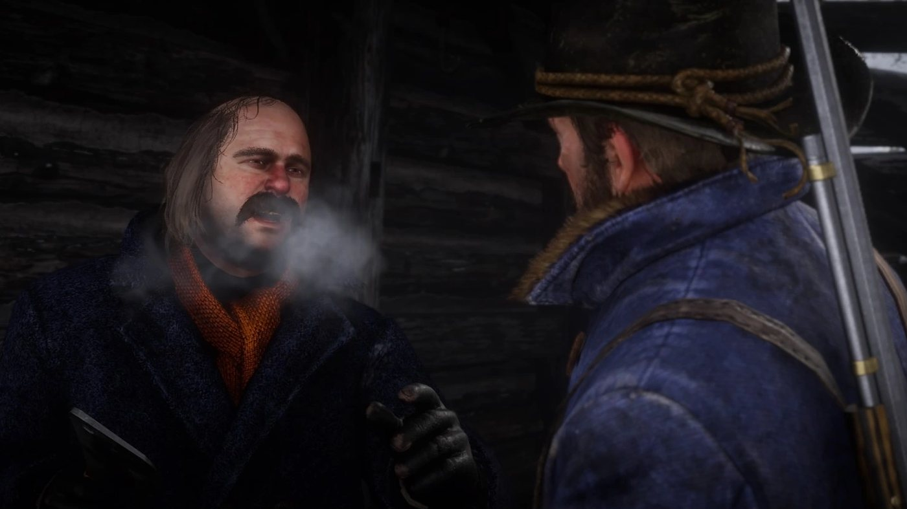
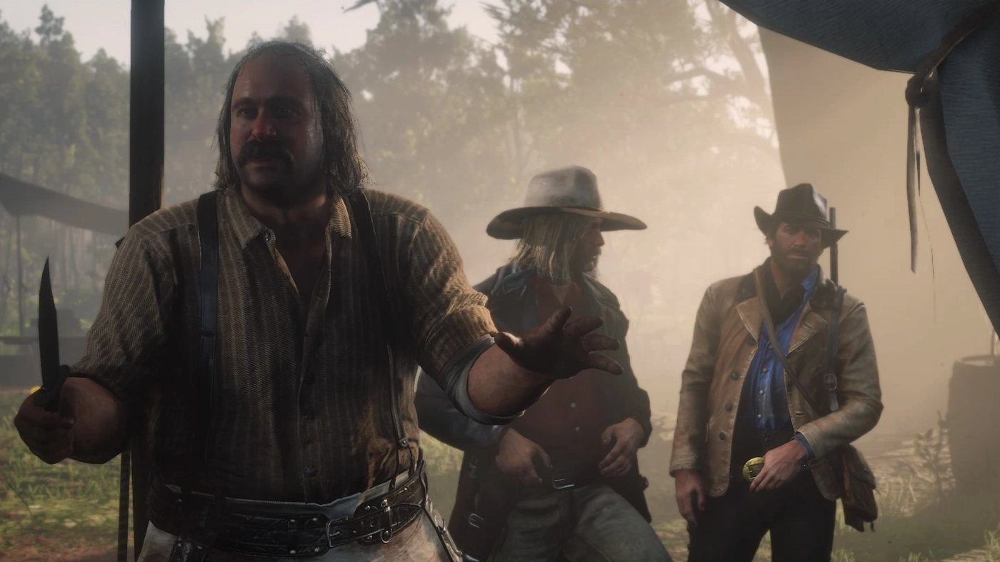
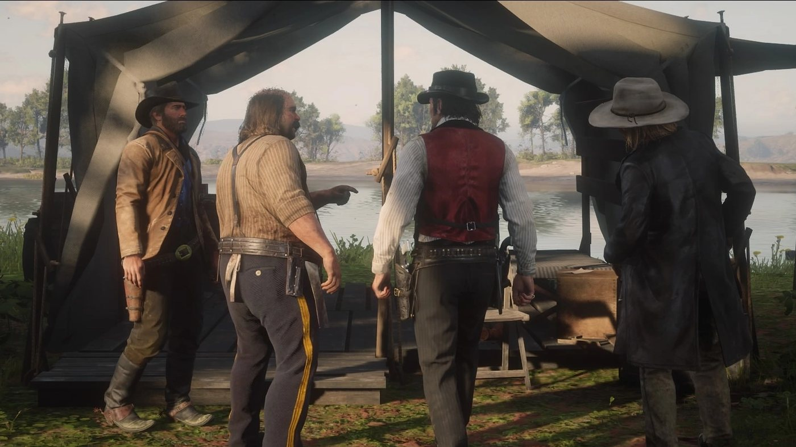
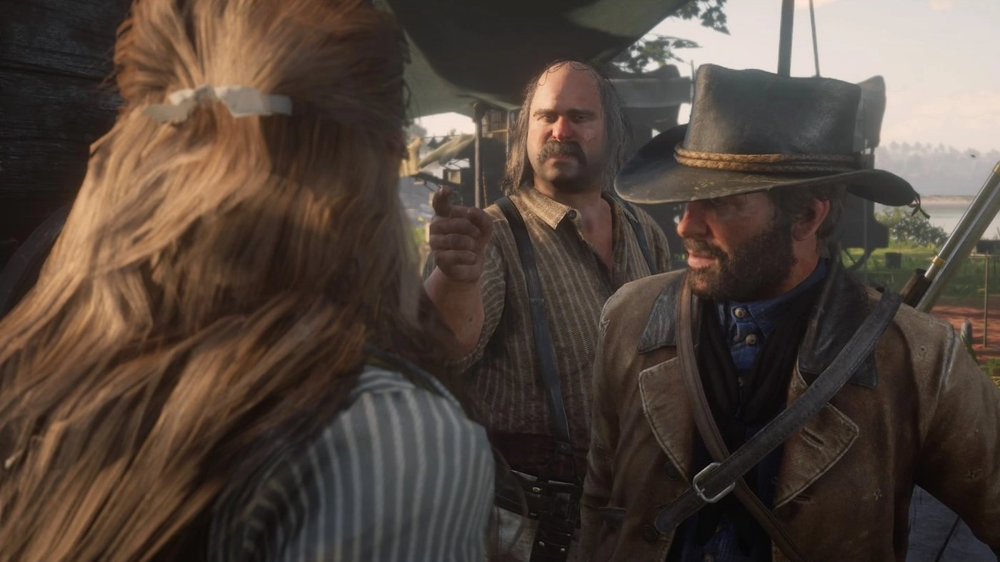
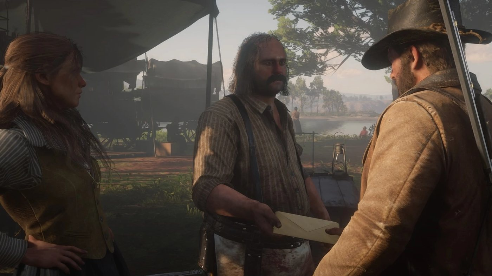
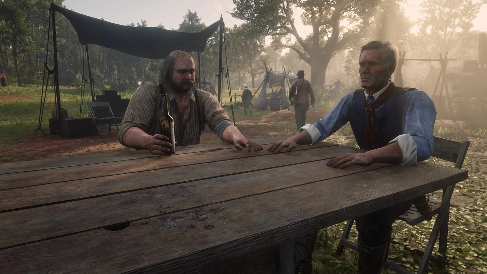
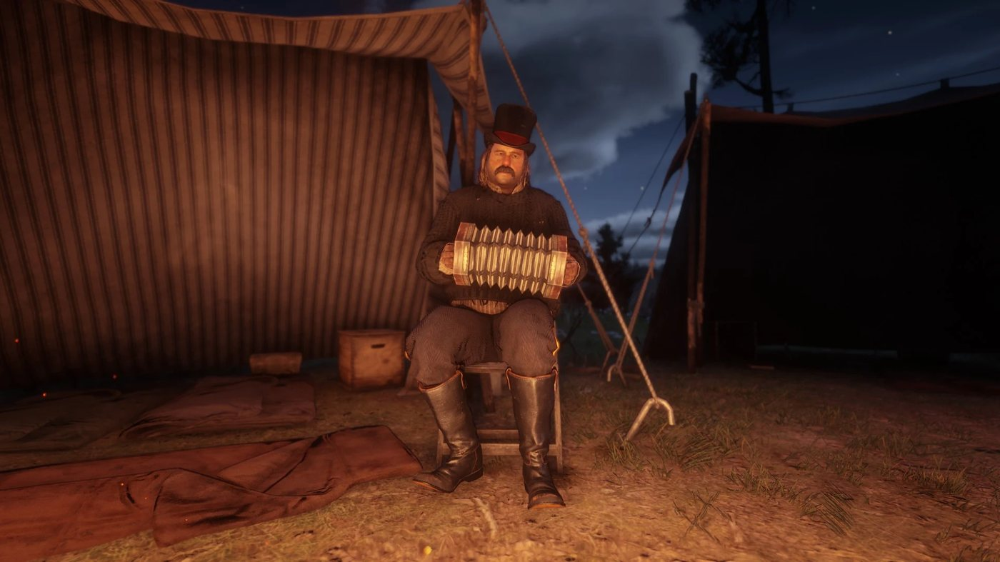
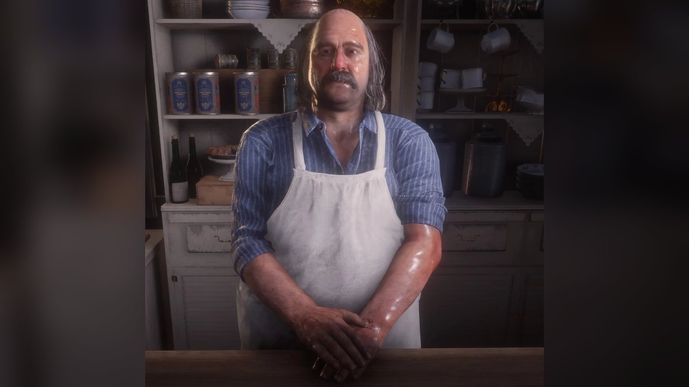
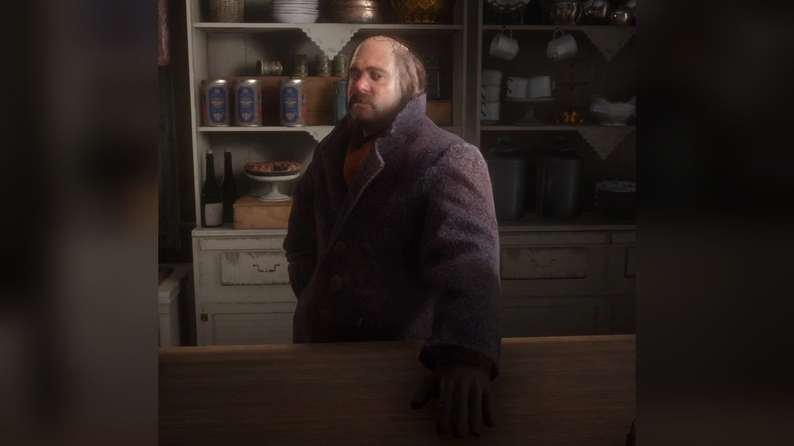
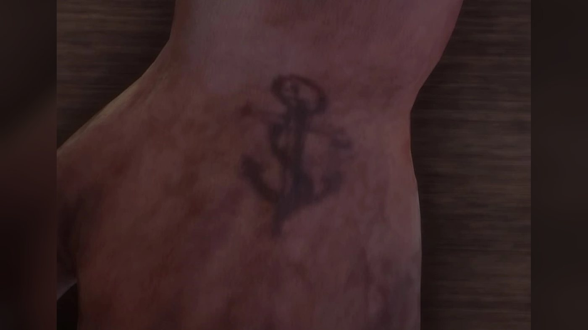